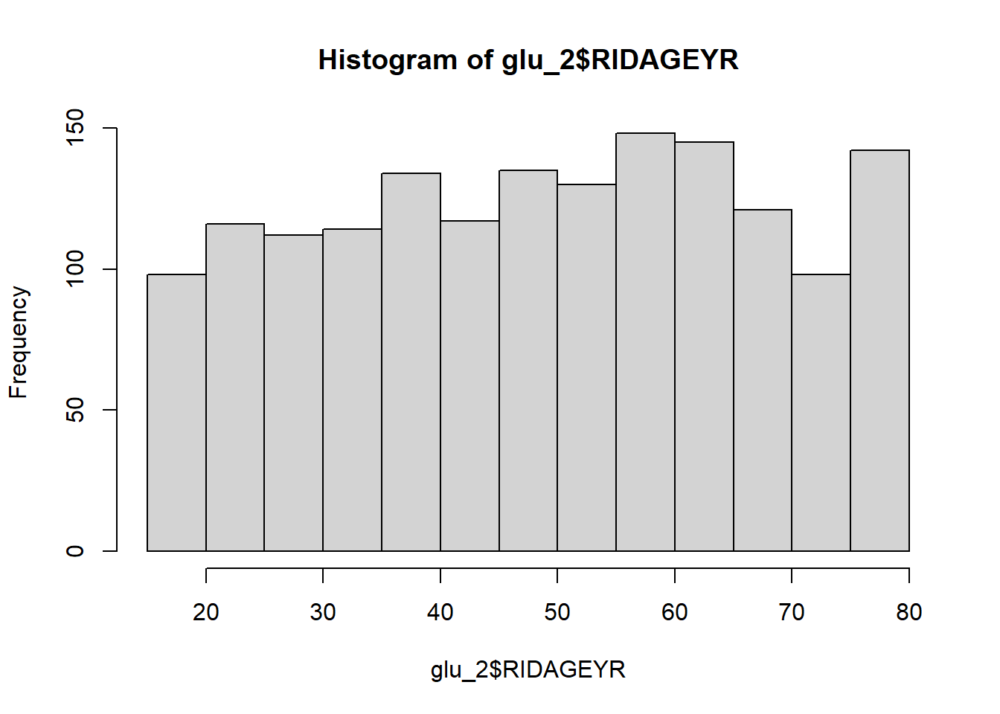
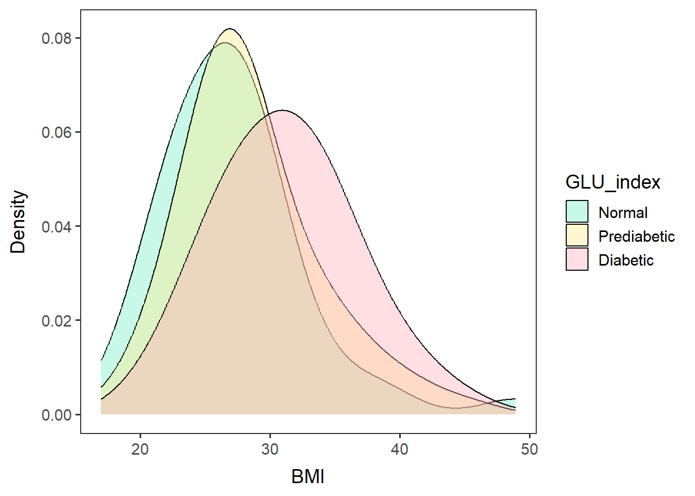
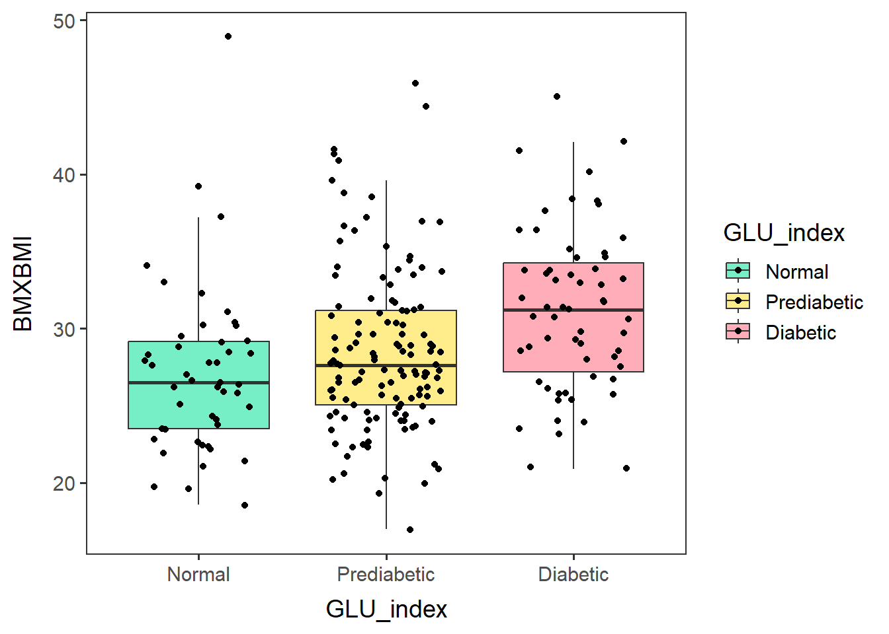
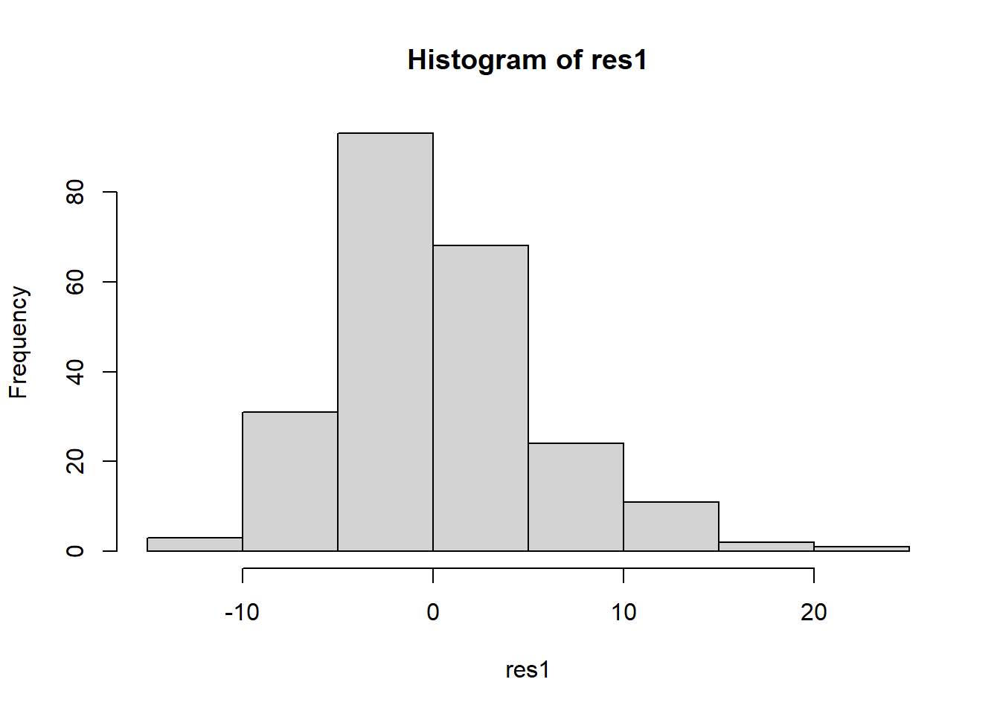
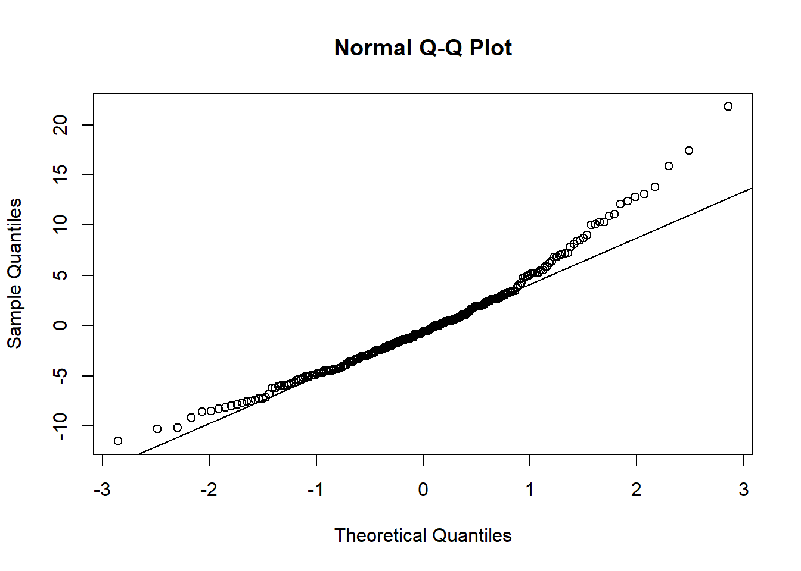
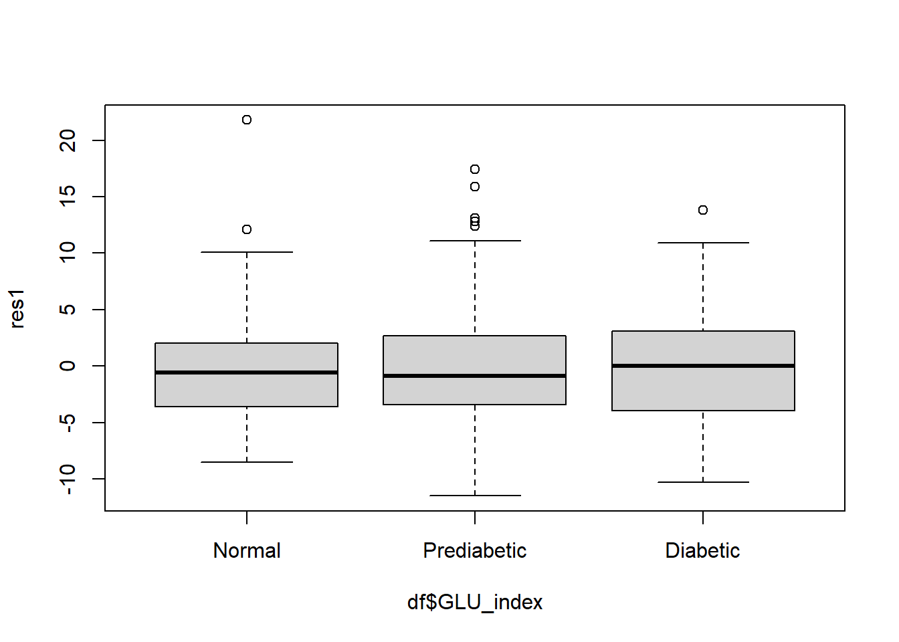
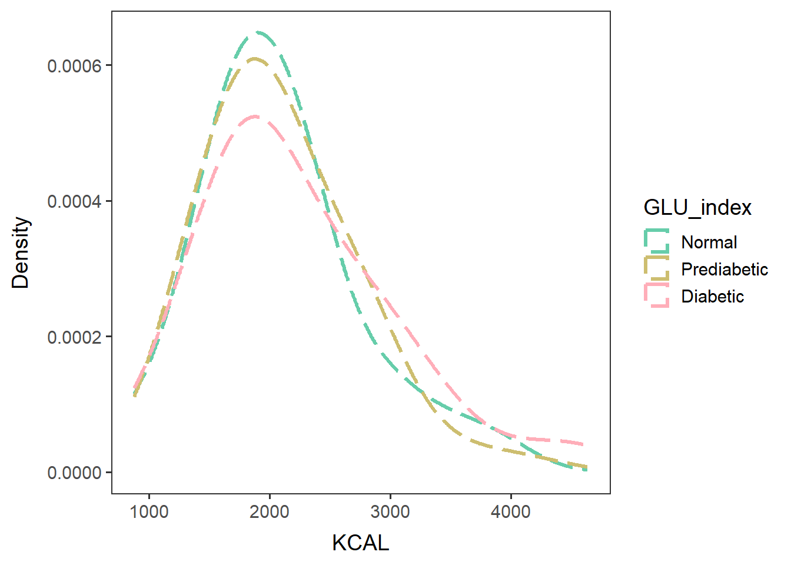
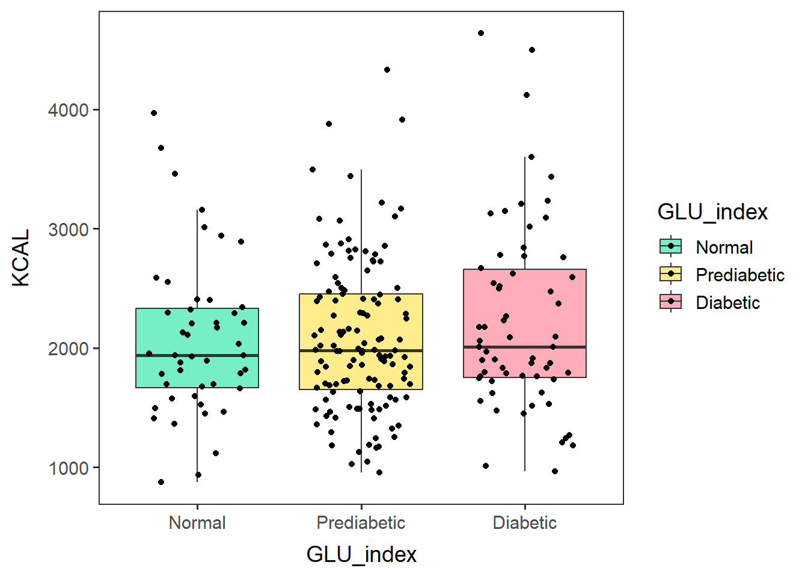

In the previous script, we identified males in their 60s and older seem to be an appropriate subsample to analyze their diabetic statuses and diet. We will remove people who are 80 years old or potentially above from our analyses because they may be using meal assistance and thus may not be eating freely.
Name the path to DietDiveR directory where input files are pulled.
main_wd <- "~/GitHub/DietDiveR"Load necessary packages.
library(ggplot2)Load the necessary functions.
source("lib/specify_data_dir.R")
source("lib/ggplot2themes.R")You can come back to the main directory by:
setwd(main_wd)Specify the directory where the data is.
SpecifyDataDirectory(directory.name = "eg_data/NHANES/Laboratory_data")Load the data of those to be used in the diabetes status analysis.
glu_2 <- read.delim(file="QCtotal_d_ga_body_meta_glu_comp_2.txt", sep="\t", header=T)Make GLU_index as a factor for plotting.
glu_2$GLU_index <- factor(glu_2$GLU_index, levels = c("Normal", "Prediabetic", "Diabetic"))Check the sample size of each category.
table(glu_2$GLU_index, useNA = "always")##
## Normal Prediabetic Diabetic <NA>
## 679 723 208 0Age - no missing data, and spread pretty evenly.
summary(glu_2$RIDAGEYR) ## Min. 1st Qu. Median Mean 3rd Qu. Max.
## 18.00 34.00 50.00 49.27 64.00 80.00hist(glu_2$RIDAGEYR)
Gender - no missing data. 1: male, 2: female.
table(glu_2$RIAGENDR, useNA="always") ##
## 1 2 <NA>
## 765 845 0Select those who are males and whose ages fall between 60-79.
glu_2_males60to79 <- subset(glu_2, RIAGENDR == 1 & RIDAGEYR >= 60 & RIDAGEYR <= 79) Check the dimension of the selected data - 236 rows.
dim(glu_2_males60to79)## [1] 236 266Ensure the ages of the selected subpopulation are between 60-79.
table(glu_2_males60to79$RIDAGEYR)##
## 60 61 62 63 64 65 66 67 68 69 70 71 72 73 74 75 76 77 78 79
## 17 22 14 12 13 17 14 11 8 13 15 11 11 9 11 11 9 7 6 5Look at the distribution of GLU_index among the selected subpopulation.
table(glu_2_males60to79$GLU_index, useNA="always")##
## Normal Prediabetic Diabetic <NA>
## 47 127 62 0Save the glu_2_males60to79 as a txt file.
write.table(glu_2_males60to79, "QCtotal_d_ga_body_meta_glu_comp_2_males60to79.txt",
sep="\t", row.names = F, quote = F)It is OK to see an error saying it removed rows containing non-finite values or missing values,as long as the charts are produced.
males60to79_BMIfreq <-
ggplot(data=glu_2_males60to79, aes(x=BMXBMI, group=GLU_index, fill=GLU_index)) +
geom_density(adjust=1.5, alpha=0.4) + space_axes + no_grid +
scale_fill_manual(values= c("aquamarine2", "lightgoldenrod1", "lightpink1") ) +
labs(x="BMI", y="Density")males60to79_BMIfreq## Warning: Removed 3 rows containing non-finite values (`stat_density()`).
Save the chart as .pdf.
ggsave("males60to79_BMI_by_GLU_index.pdf",
males60to79_BMIfreq, device="pdf", width=5.3, height=4.5)## Warning: Removed 3 rows containing non-finite values (`stat_density()`).males60to79_BMIbox <-
ggplot(glu_2_males60to79, aes(x=GLU_index, y=BMXBMI, fill=GLU_index)) +
geom_boxplot(outlier.shape = NA) + no_grid + space_axes +
scale_fill_manual(values= c("aquamarine2", "lightgoldenrod1", "lightpink1") ) +
geom_jitter(width=0.3)males60to79_BMIbox## Warning: Removed 3 rows containing non-finite values (`stat_boxplot()`).## Warning: Removed 3 rows containing missing values (`geom_point()`).
ggsave("males60to79_BMI_by_GLU_index_box.pdf",
males60to79_BMIbox, device="pdf", width=5.3, height=4.5)## Warning: Removed 3 rows containing non-finite values (`stat_boxplot()`).## Warning: Removed 3 rows containing missing values (`geom_point()`).The three GLU_index groups appear to have different BMI means.
Test the difference between groups by ANOVA.
Remove samples (rows) that have missing data in the target variable.
df <- glu_2_males60to79[complete.cases(glu_2_males60to79$BMXBMI), ]Run ANOVA.
myanova <- aov(BMXBMI ~ GLU_index, data=df)
summary(myanova)## Df Sum Sq Mean Sq F value Pr(>F)
## GLU_index 2 476 237.94 8.406 3e-04 ***
## Residuals 230 6511 28.31
## ---
## Signif. codes: 0 '***' 0.001 '**' 0.01 '*' 0.05 '.' 0.1 ' ' 1The ANOVA results indicate that the groups are different (p<0.05).
But first, test the assumptions for ANOVA.
Create a new dataset of residuals of the model.
res1 <- residuals(myanova)Check the normality assumption.
hist(res1)
qqnorm(res1, plot.it=TRUE)
qqline(res1)
The histogram and QQplot indicate the residuals have an approximately normal distribution.
check equal variance of residuals with a side-by-side boxplots of the residuals.
boxplot(res1 ~ df$GLU_index)
This boxplot also indicates the variance of the residuals are approximately equal across the factor levels.
Create a new variable of squared residuals.
res1sq <- res1*res1Levene’s test – Run ANOVA for the squared residuals as the response.
If Pr>0.05, the residuals of the groups have equal variance.
anova(lm(res1sq ~ df$GLU_index))## Analysis of Variance Table
##
## Response: res1sq
## Df Sum Sq Mean Sq F value Pr(>F)
## df$GLU_index 2 67 33.27 0.0128 0.9873
## Residuals 230 597290 2596.91The p-value (Pr) of the Levene’s test also supported equal variance.
When the assumptions are satisfied, then you can run ANOVA.
summary(aov(BMXBMI ~ GLU_index, data=df))## Df Sum Sq Mean Sq F value Pr(>F)
## GLU_index 2 476 237.94 8.406 3e-04 ***
## Residuals 230 6511 28.31
## ---
## Signif. codes: 0 '***' 0.001 '**' 0.01 '*' 0.05 '.' 0.1 ' ' 1If ANOVA is significant, you can do a pairwise t-test.
“holm” (default) is less conservative than Bonferroni p-value adjustment method for multiple comparisons. Other methods that can be used: “holm”, “hochberg”, “hommel”, “bonferroni”, “BH”, “BY”, “fdr”, “none”.
pairwise.t.test(df$BMXBMI, df$GLU_index, p.adjust.method = "holm") ##
## Pairwise comparisons using t tests with pooled SD
##
## data: df$BMXBMI and df$GLU_index
##
## Normal Prediabetic
## Prediabetic 0.12765 -
## Diabetic 0.00037 0.00324
##
## P value adjustment method: holmBased on the p-values, Normal and Prediabetic have the same mean BMI (p=0.12765 > 0.05). Normal and Diabetic have different mean BMI (p=0.00037 < 0.05), as do Prediabetic and Diabetic (p=0.00324 < 0.05).
males60to79_KCALfreq <-
ggplot(data=glu_2_males60to79, aes(x=KCAL, group=GLU_index, color=GLU_index)) +
geom_density(adjust=1.5, alpha=0.4, linewidth=1.2, linetype="longdash") + space_axes + no_grid +
scale_color_manual(values= c("aquamarine3", "lightgoldenrod3", "lightpink1")) +
labs(x="KCAL", y="Density") +
scale_y_continuous(labels= function(x) format(x, scientific = FALSE))males60to79_KCALfreq
Save the chart as .pdf.
ggsave("males60to79_KCAL_by_GLU_index.pdf",
males60to79_KCALfreq, device="pdf", width=5.3, height=4.5)males60to79_KCALbox <-
ggplot(glu_2_males60to79, aes(x=GLU_index, y=KCAL, fill=GLU_index)) +
geom_boxplot(outlier.shape = NA) + no_grid + space_axes +
scale_fill_manual(values= c("aquamarine2", "lightgoldenrod1", "lightpink1") ) +
geom_jitter(width=0.3)males60to79_KCALbox
ggsave("males60to79_KCAL_by_GLU_index_box.pdf",
males60to79_KCALbox, device="pdf", width=5.3, height=4.5)Test the difference of KCAL between groups by ANOVA.
Remove samples (rows) that have missing data in the target variable.
df <- glu_2_males60to79[complete.cases(glu_2_males60to79$KCAL), ]Run ANOVA.
summary(aov(KCAL ~ GLU_index, data=df))## Df Sum Sq Mean Sq F value Pr(>F)
## GLU_index 2 997260 498630 1.065 0.347
## Residuals 233 109123888 468343Based on the p-values for ANOVA, the energy intake in KCAL is not different between the GLU_index groups are not different.
Come back to the main directory.
setwd(main_wd)